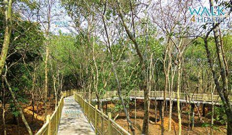

KANDLAKOYA OXYGEN PARK
Kandlakoya is a Village in Medchal Mandal in Rangareddi District of Telangana State, India. It belongs to Telangana region . As part Telangana Districts re-organisation , Kandlakoya Village Medchal Mandal re organised from Rangareddi District to Medchal district.
It is located 62 KM towards East from District head quarters Hyderabad. 6 KM from Medchal.
Kandlakoya Pin code is 501401 and postal head office is Medchal .
Laxmi Cyber City ( 2 KM ) , Basuragadi Village ( 3 KM ) , Muneerabad ( 3 KM ) , Gundlapochampalle ( 3 KM ) , 9 ( 4 KM ) are the nearby Villages to Kandlakoya. Kandlakoya is surrounded by Quthbullapur Mandal towards South , Shamirpet Mandal towards East , Jinnaram Mandal towards west , Keesara Mandal towards East .
Hyderabad , Sangareddy , Singapur , Bhongir are the near by Cities to Kandlakoya.
This Place is in the border of the Rangareddi District and Medak District. Medak District Mulug is East towards this place .

How to reach:

By Air
The nearest airport is in hyderabad

By Train
The nearest railways is in hyderabad

By Road
kandlakoya, the most famous tourist destination in Hyderabad, can be used as a landmark. A bus,cab,local rickshaw can also be taken to reach the capital.